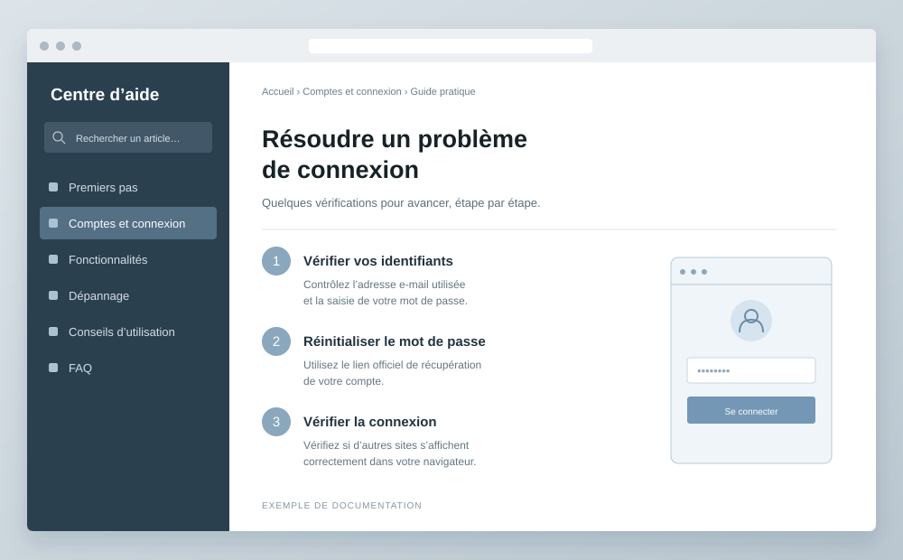

Exemple de projet
Un guide utilisateur avec l’IA
Un guide pour rendre les étapes de dépannage plus faciles à suivre.
Ouvrir le projet
Le point de départ
Comment transformer des explications techniques en étapes simples à suivre ? Cet exemple montre une façon de présenter un travail de documentation assisté par l’IA.
La démarche
- Définir le besoin : préciser le public, la situation rencontrée et les limites du guide.
- Préparer une première version : utiliser l’IA pour proposer une structure et reformuler les étapes.
- Vérifier et corriger : confronter chaque instruction au fonctionnement réel du logiciel et à sa documentation officielle.
- Rendre le guide accessible : privilégier des phrases courtes, un ordre logique et des intitulés explicites.
La place de l’IA
L’IA peut aider à structurer et à reformuler. La pertinence des conseils, leur exactitude et la validation finale restent à vérifier par la personne qui publie le guide.
Le résultat à présenter
Dans votre propre projet, décrivez le document produit, les corrections apportées aux réponses de l’IA et ce que vous avez appris. Ajoutez des résultats chiffrés uniquement si vous les avez réellement mesurés.